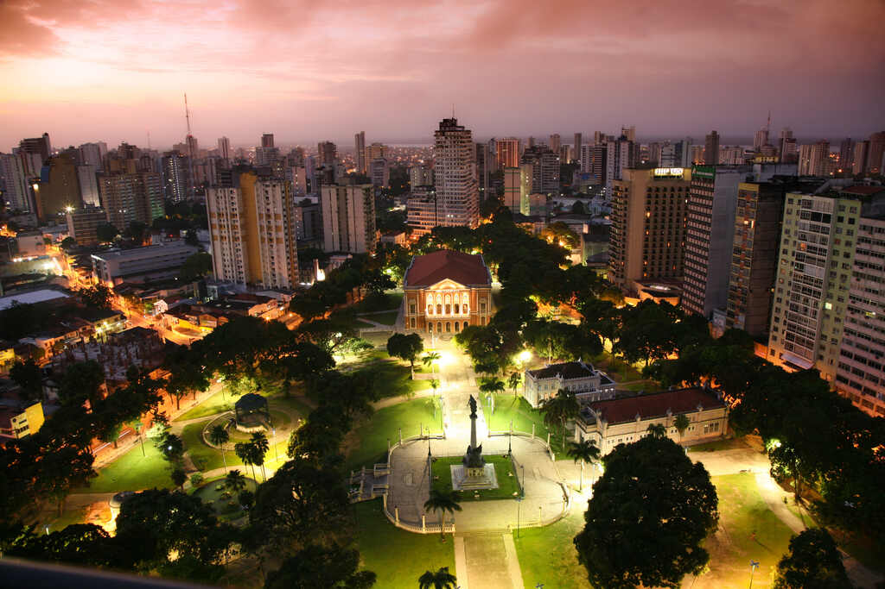

O Pará é conhecido por sua vasta floresta, rios e a cidade de Belém, que tem uma culinária deliciosa baseada em frutos do mar e ingredientes amazônicos. O estado também abriga o arquipélago de Marajó, com suas praias e fazendas de búfalos. Além disso, o Pará é palco de festas tradicionais, como o Círio de Nazaré, uma das maiores celebrações religiosas do Brasil.
